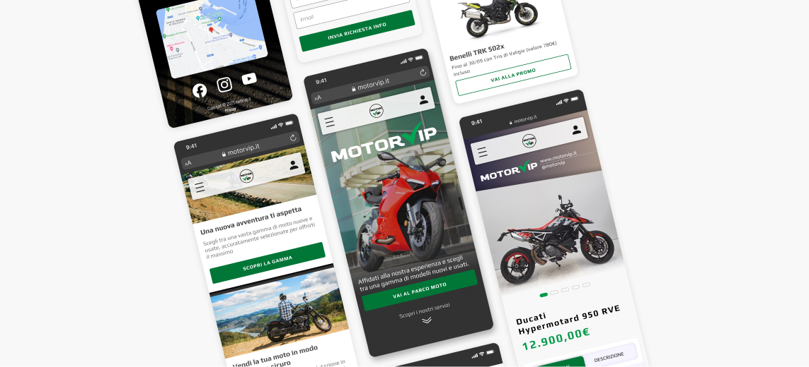

MotorVip: Ridurre l'abbandono del 30% con un ecosistema proprietario
Redesign strategico per eliminare la dipendenza dai marketplace esterni e centralizzare il funnel di vendita.

La criticità: Il "Leak" del traffico verso i competitor
Ogni utente che abbandona il sito per consultare Subito.it rappresenta un potenziale lead perso e una commissione regalata a terzi.
Obiettivi per la crescita del business:
- Retention: Integrare l'intero stock veicoli per azzerare l'uscita verso portali esterni.
- Lead Generation: Integrare una valutazione dell'usato con un tool di acquisizione dati rapido e intuitivo.
- Trust Building: Creare schede prodotto che rispondano ai dubbi dell'utente prima ancora del contatto fisico.
Insight chiave dagli utenti
"Finisco sempre su Subito.it, ma preferirei trovare tutte le offerte direttamente dal concessionario."
"Ho bisogno di una valutazione semplice per la mia moto usata, senza dover chiamare o recarmi in sede."
"Vorrei vedere foto e informazioni chiare prima di contattare il venditore."
La Soluzione: Redesign Proposal
Le tre componenti chiave del concept
Home page rinnovata
Vetrina moto integrata con filtri avanzati
Dettaglio prodotto con CTA di contatto diretto